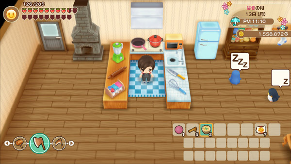

Um jogo de simulação de fazenda onde você pode cultivar, criar animais e fazer amigos na cidade.
Ran é uma garota alegre que gosta de passar tempo ao ar livre. Ela também ajuda o pai a administrar a pousada. Dudley tem muito orgulho da filha, mesmo achando-a um pouco rude. A mãe de Ran faleceu há muito tempo, deixando Dudley e Ran sozinhos para cuidarem um do outro. Ran adora cozinhar e costuma vencer o Festival de Culinária. Ran foi chamada de Ann na adaptação original em inglês do jogo para GBA.
Saiba maisJennifer é uma nova personagem adicionada à versão para Nintendo Switch de Friends of Mineral Town . Ela morava em uma cidade grande, mas decidiu se mudar para um lugar menos agitado para ficar mais perto da natureza. Ela montou uma barraca na margem do Lago da Mãe para observar e absorver a energia do ambiente ao seu redor.
Saiba maisA adorável deusa é um ser mágico que vive no lago na base da cachoeira perto da fonte termal. Ela vigia os aldeões, mas eles não podem vê-la. Ela também vigia você e o parabenizará quando você atingir marcos no jogo, como chegar a 100.000 passos no pedômetro ou chegar ao fundo de uma mina. Só você pode ver a deusa. Jogar um presente no lago dela como oferenda fará com que ela apareça, agradeça pelo presente e desapareça novamente. Ela também aparece na sua TV durante a primeira semana de cada ano para jogar um jogo de "alto/baixo" com você.
Saiba maisElly mora e trabalha na clínica em Mineral Town. Ela quer ser uma boa enfermeira, então ajuda o Doutor com qualquer coisa médica. Quando o hospital está fechado às quartas-feiras, ela vai visitar sua avó Ellen e seu irmãozinho Yu. Os pais de Elly faleceram há muito tempo e cabe a ela e Ellen criar Yu. Elly os ama muito. Elly era chamada de "Elli" no jogo original para GBA..
Saiba maisKaren é a filha teimosa de Jeff e Sasha. Ela ajuda a administrar o armazém, mas, na maioria das vezes, deixa o pai cuidar do lugar. Karen é extrovertida, pé no chão e confiável, mas deseja um pouco de romance. Às vezes, você a encontrará à noite na praia, admirando o oceano.
Saiba maisMarie administra a biblioteca de Mineral Town, no canto noroeste da cidade. Ela é um pouco quieta, assim como os livros que zela. Seu pai, Basil, escreveu muitos livros sobre as criaturas e plantas que vivem ao redor da vila, então Marie os guarda na biblioteca. Marie adora quando há visitantes na biblioteca vazia, pois assim ela pode compartilhar seus livros com outra pessoa. Marie foi chamada de Mary na adaptação original em inglês do jogo de GBA.
Saiba maisPopuri mora na granja com a mãe, Lillia, e o irmão mais velho, Rick. Ela adora galinhas e ajuda na mercearia da fazenda sempre que pode. Ela tem uma personalidade efervescente e um espírito forte, mas às vezes age como uma criança. Ela brinca com as outras duas crianças da cidade e também participa do Festival da Abóbora para crianças.
Saiba maisAo começar a cultivar, você recebe cinco ferramentas de Nível 1 para usar: o Martelo, a Enxada, a Foice, o Machado e o Regador. Com essas ferramentas baratas/de ferro, você pode limpar os detritos da sua plantação negligenciada e plantar alguns vegetais. A sexta ferramenta é a Vara de Pesca Barata, que você receberá de Zack ao visitar sua casa em Mineral Beach. Se ele não lhe der a vara durante a visita, certifique-se de deixar um espaço livre na seção Ferramentas da sua mochila. As ferramentas podem ser guardadas na Caixa de Ferramentas da sua fazenda quando você não quiser carregá-las.
O efeito de área para três das ferramentas é (distância x alcance):
| Metal | Enxada | Foice | Regador |
|---|---|---|---|
| Padrão/Ferro | 1 x 1 | 1 x 1 | 1 x 1 |
| Cobre | 2 x 1 | 1 x 3 | 1 x 3 |
| Prata | 3 x 1 | 2 x 6 | 2 x 6 |
| Ouro | 4 x 1 | 3 x 3 | 3 x 3 |
| Mithril | 6 x 1 | 5 x 5 | 3 x 5 |
| Amaldiçoada/Abençoada | 6 x 5 | 7 x 7 | 6 x 9 |
| Mitica | 9 x 9 | 9 x 9 | 9 x 9 |
O Martelo e o Machado atingirão uma rocha ou toco/galho de árvore, com níveis aprimorados exigindo menos golpes para destruir o objeto alvo. O Martelo/Machado de nível Mítico destruirá todos os objetos na área quando energizado, então tome cuidado, pois esse é o resultado pretendido antes de avançar para esse nível de ferramenta.
Essas ferramentas de Ferro/Barato (nível 1) podem ser aprimoradas levando-as para a forja ao norte da sua fazenda. A loja do Saibara abre de sexta a quarta-feira, das 10h às 16h. O ferreiro também vende outras ferramentas, como o Pincel, mas não as seis ferramentas principais.
| Metal | Custo | EXP |
|---|---|---|
| Cobre | 1000G | 10% |
| Prata | 2000G | 28% |
| Ouro | 3000G | 55% |
| Mithril | 5000G | 100% |
Você precisará usar a ferramenta para ganhar experiência nela. Você pode ver os níveis da sua ferramenta pressionando o botão X para abrir o menu principal, navegando até o menu de ferramentas e pressionando o botão Mais para abrir a janela de níveis. O jogo também o alertará quando você tiver ganhado experiência suficiente para ganhar um nível na sua ferramenta.
Você ganhará 100 pontos por usar a ferramenta para o propósito pretendido (por exemplo, usar o martelo para quebrar uma pedra) e 50 pontos por apenas balançar a ferramenta. O máximo de pontos para cada ferramenta é 65.535 (100%). Você também pode ganhar experiência na enxada e no martelo enquanto os usa durante sua exploração das minas. Você também pode ganhar pontos de experiência ficando dentro de edifícios (como sua casa de fazenda) e balançando as ferramentas.
Você também precisará de minério bruto para Saibara usar para remodelar a ferramenta. Você pode obter minério na Mina de Nascente, ao lado da Fonte Termal, na floresta. O minério está escondido nas rochas que você esmagará com um Martelo enquanto explora as profundezas da mina. Quanto mais fundo você explorar a mina, mais raros serão os minérios encontrados.
Cozinhar refeições é uma atividade que pode beneficiar tanto você quanto seu relacionamento com os aldeões de Mineral Town. Você pode comer refeições prontas para restaurar sua resistência e fadiga, ou presenteá-las para aumentar seus pontos de amor e amizade com outras pessoas. Receitas prontas também podem ser vendidas para Huang em sua loja.
São 120 receitas para colecionar. O livro de receitas é dividido em 5 páginas com 21 receitas cada:
Receitas de Culinária, Página 1 (001 a 024)Para começar a cozinhar, você precisará melhorar sua casa. Gotts oferece a primeira opção de reforma por 150 madeira, 50 pedras e 3000 G. Ele levará 3 dias para melhorar sua casa para um tamanho médio. A reforma incluirá a área da cozinha e duas receitas culinárias: sashimi e zaru soba.
Infelizmente, você não pode preparar essas refeições sem ter os utensílios de cozinha adequados. Eles são vendidos no supermercado do Jeff, e ele enviará uma carta por correio quando um utensílio de cozinha estiver disponível em sua loja de artigos para a casa:
Você também pode comprar uma Geladeira da Gotts (2500 G) para armazenar os ingredientes das suas refeições. Uma Geladeira Grande (5000 G) fica disponível para compra após você atualizar sua casa para o tamanho Grande e possuir a Geladeira normal por pelo menos 3 dias.
Friends of Mineral Town não permite culinária experimental como no jogo para GBA, onde você pode combinar uma variedade aleatória de ingredientes e torcer para que o prato não queime; aliás, você nem consegue fazer um prato que não deu certo nesta versão da série. Você precisa saber a receita para cozinhar. Há um total de 120 receitas culinárias para colecionar. Além disso, você NÃO precisa ser o dono da cozinha para aprender receitas! Qualquer receita que você aprender antes de instalar sua cozinha ainda será salva no seu livro de receitas.
As receitas podem ser aprendidas por:
Para preparar uma refeição, vá até a cozinha e pressione o botão A. Escolha a receita no livro de receitas da cozinha para ver os ingredientes que você precisa ter na mochila ou na geladeira para preparar o prato com sucesso. Se você tiver todos os ingredientes necessários, terá mais duas opções: 1) o nível de qualidade dos ingredientes (classificação por estrelas e nível de produto animal) e 2) o número de pratos que deseja preparar.
Pressione o botão Y para priorizar entre usar ingredientes de menor qualidade e ingredientes de maior qualidade e pressione o controle esquerdo para cima ou para baixo para selecionar a quantidade. Você pode preparar até 9 pratos do prato selecionado. Em seguida, pressione o botão A para confirmar.